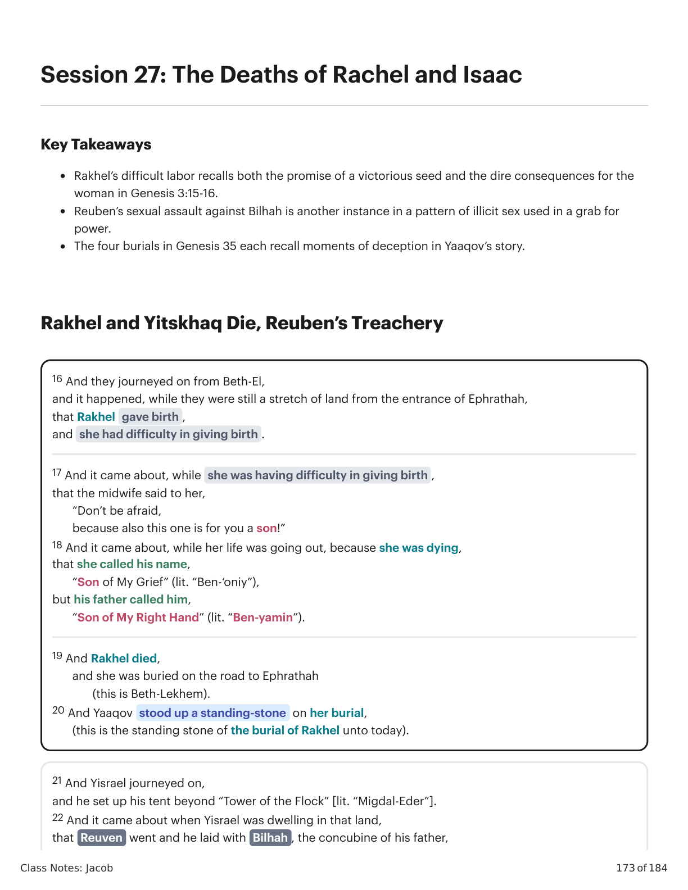

16 E eles seguiram em viagem desde Betel, e aconteceu, enquanto ainda eram um trecho de terra da entrada de Efrata, que Raquel deu à luz, e ela teve dificuldade ao dar à luz. 17 E aconteceu, enquanto ela estava tendo dificuldade ao dar à luz, que a parteira disse a ela: "Não tenha medo, pois também este é para você um filho!" 18 E aconteceu, enquanto a vida dela estava se esgotando, porque ela estava morrendo, que ela chamou seu nome, "Filho do Meu Lamento" (lit. "Ben-‘oniy"), mas seu pai o chamou de "Filho da Minha Mão Direita" (lit. "Ben-yamin"). 19 E Raquel morreu, e ela foi enterrada no caminho para Efrata (isto é Belém). 20 E Yaaqov ergueu uma pedra em pé sobre seu sepulcro (esta é a pedra em pé do sepulcro de Raquel até hoje). 21 E Yisrael seguiu em viagem, e armou sua tenda além da "Torre do Rebanho" [lit. “Migdal-Eder”]. 22 E aconteceu quando Yisrael estava morando naquela terra, que Reuven foi e ele se deitou com Bilá, a concubina de seu pai,16 And they journeyed on from Beth-El, and it happened, while they were still a stretch of land from the entrance of Ephrathah, that Rakhel gave birth, and she had difficulty in giving birth. 17 And it came about, while she was having difficulty in giving birth, that the midwife said to her, “Don’t be afraid, because also this one is for you a son!” 18 And it came about, while her life was going out, because she was dying, that she called his name, “Son of My Grief” (lit. “Ben-‘oniy”), but his father called him, “Son of My Right Hand” (lit. “Ben-yamin”). 19 And Rakhel died, and she was buried on the road to Ephrathah (this is Beth-Lehem). 20 And Yaaqov stood up a standing-stone on her burial, (this is the standing stone of the burial of Rakhel unto today). 21 And Yisrael journeyed on, and he set up his tent beyond “Tower of the Flock” [lit. “Migdal-Eder”]. 22 And it came about when Yisrael was dwelling in that land, that Reuben went and he lay with Bilhah, the concubine of his father.

Gênesis 35:16-22. Tradução e Design Literário por Tim Mackie para BibleProject Classroom: Jacó (2021).Genesis 35:16-22. Translation and Literary Design by Tim Mackie for BibleProject Classroom: Jacob (2021).
Há quatro “sepulturas” nesta coleção de histórias, três de pessoas e uma de ídolos, cada uma iluminando as outras. Gênesis 35:4: Ídolos; Gênesis 35:6, 8: Débora; Gênesis 35:17-20: Raquel; Gênesis 35:29: Isaque. E eles deram a Yaaqov todos os deuses estrangeiros (ídolos, brincos de ouvido), e ele os escondeu (...) Yaaqov foi a Luz ... (isto é, Betel) ... e ela morreu (...) e eles enterraram ele (...) Esau e Yaaqov, seus filhos.There are four “burial” notices in this collection of stories, three of people and one of idols, each illuminating the others. Genesis 35:4: Idols; Genesis 35:6, 8: Deborah; Genesis 35:17-20: Rakhel; Genesis 35:29: Isaac. And they gave to Yaaqov all the foreign gods (idols, ear rings), and he hid them (...) Yaaqov went to Luz ... (that is, Bethel) ... and she died (...) and they buried him (...) Esau and Yaaqov, his sons.
Gênesis 35:4, 6, 8, 17-20, 29. Tradução e Design Literário por Tim Mackie para BibleProject Classroom: Jacó (2021).Genesis 35:4, 6, 8, 17-20, 29. Translation and Literary Design by Tim Mackie for BibleProject Classroom: Jacob (2021).
Gen. 35:6, 8: Deborah the nursemaid died and was buried under the oak tree, and he called its name “Oak of Weeping.” As [Rakhel’s] birth was harsh, her midwife said to her … and she died … and they buried him … and Yitskhaq died … and they buried him … Esau and Yaaqov, his sons. Yaaqov Many Burials. Created by Tim Mackie for BibleProject Classroom: Jacob (2021). Rakhel’s death in Genesis 35:19 is set on analogy to the death of Deborah, to the burial of the idols in Genesis 35:4, and also to Yitskhaq’s death which quickly follows. The buried idols remind of us Rakhel’s theft of those same idols in chapter 31. Are we meant to conclude that her death is somehow connected to Yaaqov's words back in Genesis 31:32? “The one with whom your elohim are found, that one will not live!” The death of Deborah reminds us of Rivqah's deception (in ch. 27) and the fact that her promise in Genesis 27:45 to send for Yaaqov never came true. In fact, Rivqah is the only matriarch in Genesis whose death and burial goes unmentioned. Only her maidservant is named, and Deborah too dies as Yaaqov returns to the land. He not only does not get to see his mother, but he is forced to become undertaker for his late mother’s nurse. Thus, one of Jacob's first experiences after coming back home is confronting death. By including the name Rebekah, the author helps his reader recall her character, she who instigated the deception of Isaac. Her punishment (implied at least) is that she will never get to see her son again.” Hamilton, Victor P. (1995). The Book of Genesis, Chapters 18–50. Eerdmans. 378.Gen. 35:6, 8: Deborah the nursemaid died and was buried under the oak tree, and he called its name “Oak of Weeping.” As [Rakhel’s] birth was harsh, her midwife said to her … and she died … and they buried him … and Yitskhaq died … and they buried him … Esau and Yaaqov, his sons. Yaaqov Many Burials. Created by Tim Mackie for BibleProject Classroom: Jacob (2021). Rakhel’s death in Genesis 35:19 is set on analogy to the death of Deborah, to the burial of the idols in Genesis 35:4, and also to Yitskhaq’s death which quickly follows. The buried idols remind of us Rakhel’s theft of those same idols in chapter 31. Are we meant to conclude that her death is somehow connected to Yaaqov's words back in Genesis 31:32? “The one with whom your elohim are found, that one will not live!” The death of Deborah reminds us of Rivqah's deception (in ch. 27) and the fact that her promise in Genesis 27:45 to send for Yaaqov never came true. In fact, Rivqah is the only matriarch in Genesis whose death and burial goes unmentioned. Only her maidservant is named, and Deborah too dies as Yaaqov returns to the land. He not only does not get to see his mother, but he is forced to become undertaker for his late mother’s nurse. Thus, one of Jacob's first experiences after coming back home is confronting death. By including the name Rebekah, the author helps his reader recall her character, she who instigated the deception of Isaac. Her punishment (implied at least) is that she will never get to see her son again.” — Hamilton, Victor P. (1995). The Book of Genesis, Chapters 18–50. Eerdmans. 378.
Gen. 35:4: Idols buried under the oak in Shechem. Gen. 35:17-20: Rakhel died and was buried on the road to Ephrathah (that is Bethlehem), and Yaaqov set up a pillar upon her grave (that’s the pillar of the grave of Rakhel unto today). Yaaqov Many Burials. Created by Tim Mackie for BibleProject Classroom: Jacob (2021). Burying Rakhel: Recalls Yaaqov's curse in Genesis 31:32, which said the one who stole the idols would die, while sadly, Yaaqov, the one who stole the blessing, lives on.Gen. 35:4: Idols buried under the oak in Shechem. Gen. 35:17-20: Rakhel died and was buried on the road to Ephrathah (that is Bethlehem), and Yaaqov set up a pillar upon her grave (that’s the pillar of the grave of Rakhel unto today). Yaaqov Many Burials. Created by Tim Mackie for BibleProject Classroom: Jacob (2021). Burying Rakhel: Recalls Yaaqov's curse in Genesis 31:32, which said the one who stole the idols would die, while sadly, Yaaqov, the one who stole the blessing, lives on.
Gen. 35:29: Yitskhaq expired and he died, and he was gathered to his fathers, old and full of days, and they buried him, Esau and Yaaqov, his sons. Yaaqov Many Burials. Created by Tim Mackie for BibleProject Classroom: Jacob (2021). Burying Yitskhaq: Recalls Yaaqov's deception of Yitskhaq, and how he died not long after he returned from the land.Gen. 35:29: Yitskhaq expired and he died, and he was gathered to his fathers, old and full of days, and they buried him, Esau and Yaaqov, his sons. Yaaqov Many Burials. Created by Tim Macke for BibleProject Classroom: Jacob (2021). Burying Yitskhaq: Recalls Yaaqov's deception of Yitskhaq, and how he died not long after he returned from the land.
The story of Reuben’s rape of Bilhah is another sordid moment for the sons of Yaaqov. Within the larger frame of Genesis 33:18-35:29, there is a deliberate strategy to compare Reuben’s behavior with Shechem, son of Hamor, from Genesis 34. Yaaqov and Reuben Yaaqov, Sh’khem, Shim’on, and Levi Gen. 35:21 And Israel set out and he pitched his tent from there to Migdal Eder Gen. 33:18-20 Yaaqov went to the city of Shechem in the land of Canaan when he returned from Paddan-aram, and there he pitched his tent Gen. 35:22 And while Israel dwelt in that land, Reuben went and laid with Bilhah, concubine of his father, and Israel heard of it. Gen. 34 Shechem son of Khamor rapes Dinah daughter of Yaaqov Gen. 34:5 And Yaaqov heard that he had defiled Dinah his daughter … and Yaaqov kept silent . Simeon and Levi deceive and murder the men of Shechem. Gen. 49:3-4 Reuben , you are my firstborn; my might and the beginning of my strength, preeminent in dignity and preeminent in power. Uncontrolled as water, you shall not have preeminence, because you went up to your father’s bed; then you defiled it—he went up to my couch . Gen. 49:5-7 Simeon and Levi are brothers; their swords are implements of violence . Let my soul not enter into their council; let not my glory be united with their assembly; because in their anger they murdered men , and in their self-will they lamed oxen. Cursed be their anger, for it is fierce; and their wrath, for it is cruel. I will disperse them in Yaaqov, and scatter them in Israel. Yaaqov, Reuben, and Sh'khem Comparison. Created by Tim Mackie for BibleProject Classroom: Jacob (2021). In both sequences, Yaaqov pitches a tent right before a disaster hits his family. In the first sequence, Shechem rapes Yaaqov's daughter, leading to the violent revenge carried out by his second- and third-born sons. In the second sequence, Reuben rapes Yaaqov's concubine, who was the slave of Rakhel who just died. Through this parallelism, Reuben is compared to both the abusive Shechem and to his violent brothers. Notice that in Genesis 49, all three come in for critique and curse. While Reuben’s motives are not stated, the reader is invited into a whole network of narrative patterns where illicit sex is a way of challenging one’s rival. The sons of Elohim (Gen. 6:1-4) Ham “seeing the nakedness of his father” (Gen. 9:18-23) Lot’s daughters having drunk sex with their father in the cave (Gen. 19:30-38) Leah attempting to buy the conjugal rights of Yaaqov (Gen. 30:14-16) Abner sleeping with Saul’s concubine (2 Sam. 3:7-8) Absalom raping David’s concubines (2 Sam. 15:16 and 16:22) Adoniyah’s request to sleep with David’s concubines (1 Kings 2:13-25) “This incident is directly linked to the foregoing because it is Rachel's demise that presents the occasion for Reuben’s act. By violating Bilhah, Reuben makes sure that she cannot supplant or even rival his mother's [Leah’s] position of chief wife now that Rachel is dead ... In this connection, it is interesting that Reuben had earlier been involved in the attempt to get his father to restore the conjugal rights of his mother (30:14–16). As a result of Reuben’s cohabitation with Bilhah, she would thereby acquire the tragic status of 'living widowhood ...' All this leads to the conclusion that Reuben’s bid to promote his mother’s rights is at the same time a calculated challenge to his father’s authority. His failure is reflected in Jacob's rebuke of 49:3–4, in which he removes Reuben from hegemony over the tribes.” Sarna, Nahum M. (2001). Genesis, The JPS Torah Commentary. JPS. 245.The story of Reuben’s rape of Bilhah is another sordid moment for the sons of Yaaqov. Within the larger frame of Genesis 33:18-35:29, there is a deliberate strategy to compare Reuben’s behavior with Shechem, son of Hamor, from Genesis 34. Yaaqov and Reuben Yaaqov, Sh’khem, Shim’on, and Levi Gen. 35:21 And Israel set out and he pitched his tent from there to Migdal Eder Gen. 33:18-20 Yaaqov went to the city of Shechem in the land of Canaan when he returned from Paddan-aram, and there he pitched his tent Gen. 35:22 And while Israel dwelt in that land, Reuben went and laid with Bilhah, concubine of his father, and Israel heard of it. Gen. 34 Shechem son of Khamor rapes Dinah daughter of Yaaqov Gen. 34:5 And Yaaqov heard that he had defiled Dinah his daughter … and Yaaqov kept silent . Simeon and Levi deceive and murder the men of Shechem. Gen. 49:3-4 Reuben , you are my firstborn; my might and the beginning of my strength, preeminent in dignity and preeminent in power. Uncontrolled as water, you shall not have preeminence, because you went up to your father’s bed; then you defiled it—he went up to my couch . Gen. 49:5-7 Simeon and Levi are brothers; their swords are implements of violence . Let my soul not enter into their council; let not my glory be united with their assembly; because in their anger they murdered men , and in their self-will they lamed oxen. Cursed be their anger, for it is fierce; and their wrath, for it is cruel. I will disperse them in Yaaqov, and scatter them in Israel. Yaaqov, Reuben, and Sh'khem Comparison. Created by Tim Mackie for BibleProject Classroom: Jacob (2021). In both sequences, Yaaqov pitches a tent right before a disaster hits his family. In the first sequence, Shechem rapes Yaaqov's daughter, leading to the violent revenge carried out by his second- and third-born sons. In the second sequence, Reuben rapes Yaaqov's concubine, who was the slave of Rakhel who just died. Through this parallelism, Reuben is compared to both the abusive Shechem and to his violent brothers. Notice that in Genesis 49, all three come in for critique and curse. While Reuben’s motives are not stated, the reader is invited into a whole network of narrative patterns where illicit sex is a way of challenging one’s rival. The sons of Elohim (Gen. 6:1-4) Ham “seeing the nakedness of his father” (Gen. 9:18-23) Lot’s daughters having drunk sex with their father in the cave (Gen. 19:30-38) Leah attempting to buy the conjugal rights of Yaaqov (Gen. 30:14-16) Abner sleeping with Saul’s concubine (2 Sam. 3:7-8) Absalom raping David’s concubines (2 Sam. 15:16 and 16:22) Adoniyah’s request to sleep with David’s concubines (1 Kings 2:13-25) “This incident is directly linked to the foregoing because it is Rachel's demise that presents the occasion for Reuben’s act. By violating Bilhah, Reuben makes sure that she cannot supplant or even rival his mother's [Leah’s] position of chief wife now that Rachel is dead ... In this connection, it is interesting that Reuben had earlier been involved in the attempt to get his father to restore the conjugal rights of his mother (30:14–16). As a result of Reuben’s cohabitation with Bilhah, she would thereby acquire the tragic status of 'living widowhood ...' All this leads to the conclusion that Reuben’s bid to promote his mother’s rights is at the same time a calculated challenge to his father’s authority. His failure is reflected in Jacob's rebuke of 49:3–4, in which he removes Reuben from hegemony over the tribes.” — Sarna, Nahum M. (2001). Genesis, The JPS Torah Commentary. JPS. 245.
Como as maldições e consequências de Gênesis 3:14-19 continuam a aparecer na história de Yaaqov?How do the curses and consequences of Genesis 3:14-19 continue to show up in the Yaaqov story?